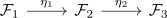

exact sequence of sheaves
Definition
Let $X$ be a topological space, $\mathcal{F}_1,\mathcal{F}_2,\mathcal{F}_3$ be sheafs and $\eta_1: \mathcal{F}_1 \rightarrow \mathcal{F}_2, \eta_2: \mathcal{F}_2 \rightarrow \mathcal{F}_3$ be morphism of sheaves. Then

is said to be exact at $\mathcal{F}_2$, if
\begin{align*}
\mathrm{im}(\eta_1) \cong \mathrm{ker}(\eta_w)
\end{align*}
are naturally isomorphic
where